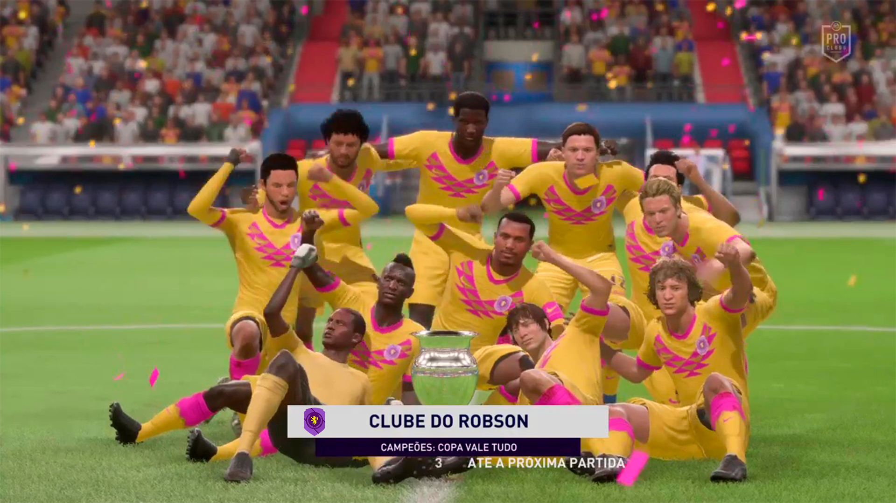

O que o novo reforço pode acrescentar ao clube?
Acho que em um clube desse tamanho, o capitão precisa ter várias opções pra xingar quando a jogada dá errado. Ele vem pra ser uma ótima alternativa.Era o momento certo de uma contratação mesmo após 4 temporadas seguidas na primeira divisão?
Claro, ou vai ou racha. Tenho certeza de que agora a gente vai conquistar um caneco, seja na A ou na B.Quais as expectativas para o futuro do time?
Com o número de solteiros do time só aumentando, eu espero uma subida na quantidade de jogos do clube.Os torcedores exigiam muito essa contratação, então é seu momento de mandar um recado a eles.
Torcedor é o meu pau de sombrero. O Clube é do Robson, não da torcida. Qual a perspectiva de jogar no clube do Robson, time que se manteve na primeira divisão por 4 temporadas seguidas?
É um grande passo na minha carreira jogar nesse grande clube com tamanha tradição. Espero poder fazer essa torcida muito felizQuais as expectativas para as próximas temporadas?
A expectativa é me adequar a equipe e entregar um bom desempenho na temporadaQual o sentimento de mudança para um novo clube que almeja grandes títulos?
O sentimento é de extrema felicidade, e esperança de títulosQual seu sentimento com os torcedores que não paravam de falar disso nas redes sociais?
Me senti muito acolhido pelos torcedores, espero não desaponta-los